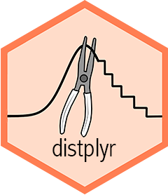

Manipulating Distributions
manipulating.Rmd
library(distplyr)
#> Loading required package: distionary
library(distionary)
library(magrittr)
library(tibble)distplyr provides a vocabulary of verbs for manipulating distributions.
Unary operations:
-
+/-orshift(): Add a constant to a random variable. -
*//ormultiply(): Multiply a constant to a random variable. -
invert(): Invert a distribution, i.e, the distribution of the reciprocal of a random variable. -
flip(): Flip a distribution about 0, i.e., the negative of a random variable. -
slice_left()andslice_right(): Restrict the possible values that a random variable can take.
Binary operations:
-
graft_left()andgraft_right(): Replace the upper or lower tail of a distribution with another distribution.
n-ary operations:
-
mix(): Make a mixture distribution from two or more distributions.
Each of these take a distribution as its first argument(s), and return a distribution, making them pipeable.